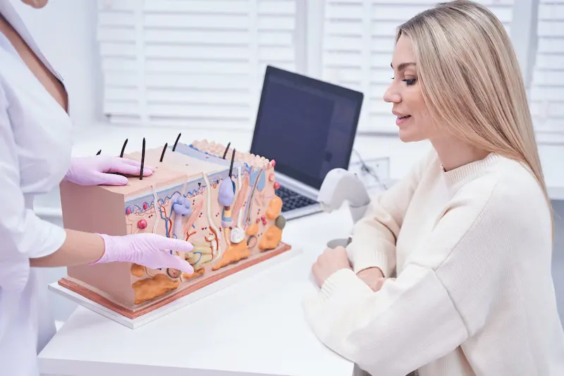
Component cheie pentru reglarea sebumului și controlul excesului de sebumCe este excesul de sebum și de ce apare
Sebumul este grăsimea naturală produsă de glandele sebacee pentru a proteja și hidrata pielea. Acesta ajută la menținerea barierei cutanate, previne pierderea apei și protejează împotriva factorilor externi. Însă, atunci când este produs în exces, pielea devine grasă, apare luciul și crește riscul de blocare a porilor.
Principalele cauze ale excesului de sebum sunt legate de modificările hormonale, predispoziția genetică și îngrijirea incorectă. În condițiile climatice din România, situația poate fi agravată de temperaturile ridicate vara, variațiile de temperatură și aerul uscat din interior, ceea ce determină pielea să producă și mai mult sebum pentru a compensa.
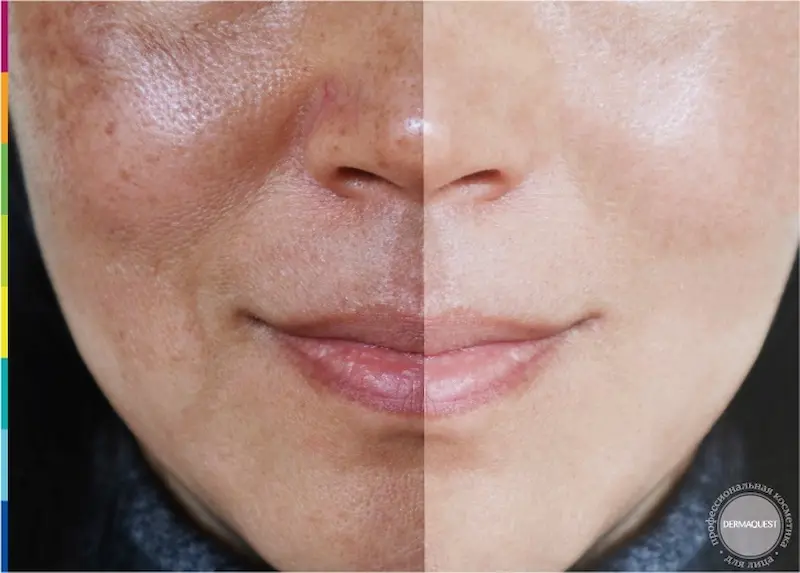
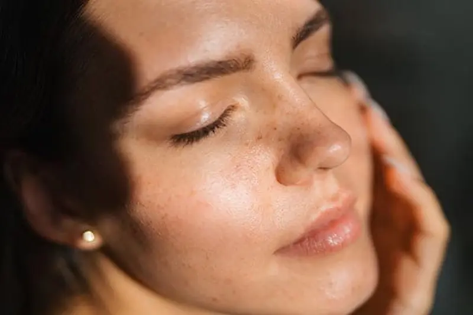
Cum îți dai seama că pielea produce prea mult sebum
Excesul de sebum nu se manifestă doar prin luciu, ci și prin modificarea texturii pielii. Porii devin mai vizibili, pielea se murdărește mai repede, iar machiajul rezistă mai puțin.
În climatul din România, aceste manifestări pot deveni mai intense vara, din cauza căldurii, iar iarna din cauza deshidratării provocate de aerul uscat din interior.
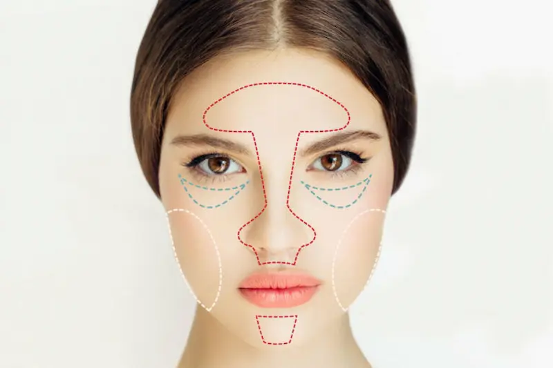
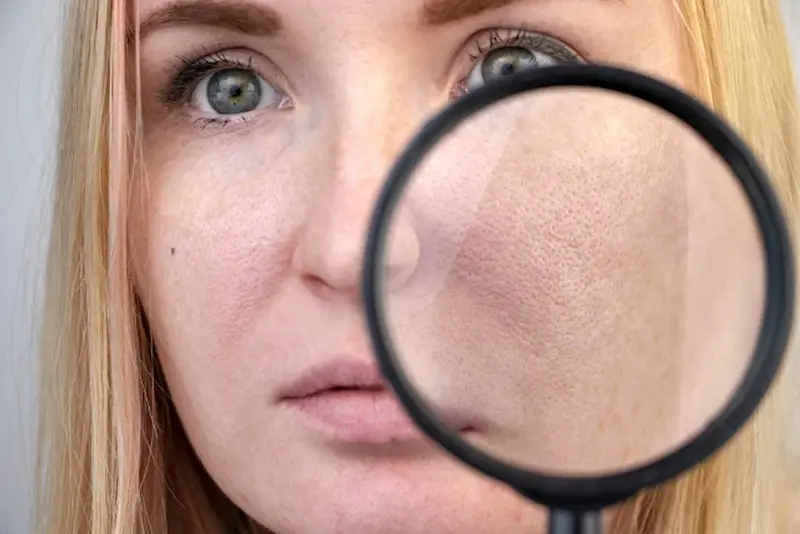
Greșeli în îngrijire care cresc producția de sebum
De multe ori, încercările de a „usca” pielea duc la efectul opus. Îngrijirea incorectă poate dezechilibra pielea și o poate determina să producă și mai mult sebum.
În condițiile climatului din România, este important să nu deshidratezi pielea, deoarece combinația dintre temperaturi ridicate și aer uscat poate accentua dezechilibrul și sensibilitatea pielii.
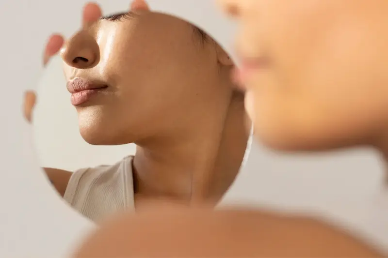
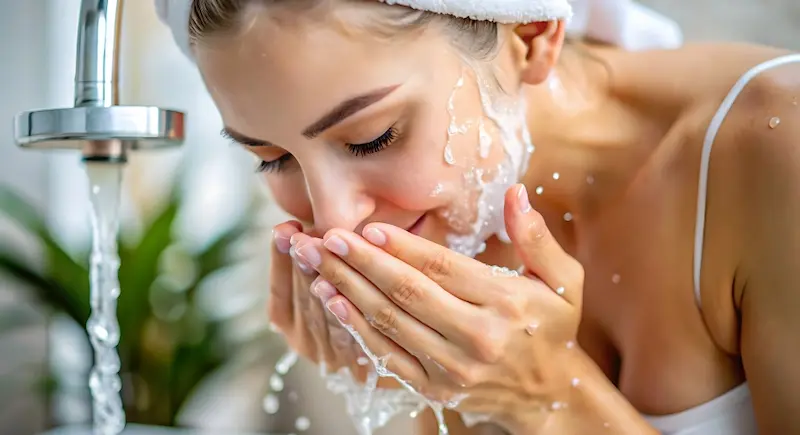
Cum să controlezi excesul de sebum și să reduci luciul pielii
Controlul sebumului nu înseamnă eliminarea completă a grăsimii pielii, ci restabilirea echilibrului acesteia. O rutină corectă ajută la reglarea activității glandelor sebacee, reduce luciul și previne apariția imperfecțiunilor fără a deshidrata pielea.
În climatul din România, este important să adaptezi rutina: vara să alegi texturi ușoare și produse matifiante, iar iarna să adaugi mai multă hidratare pentru a evita producția compensatorie de sebum.
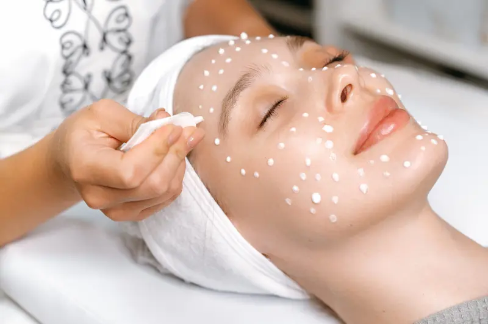
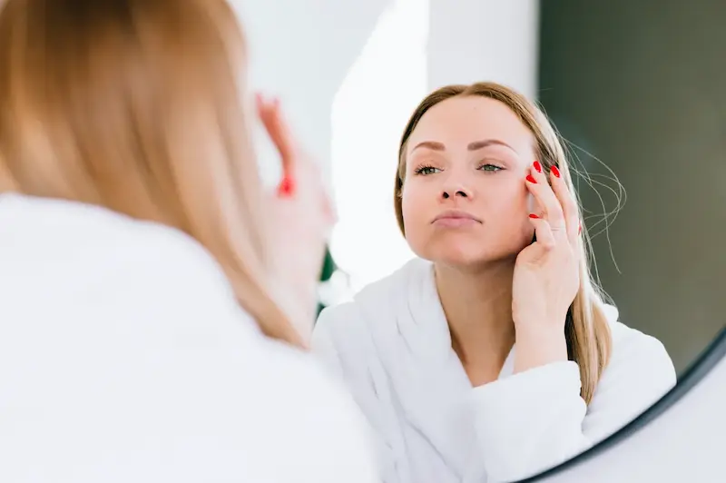
Top produse pentru controlul sebumului
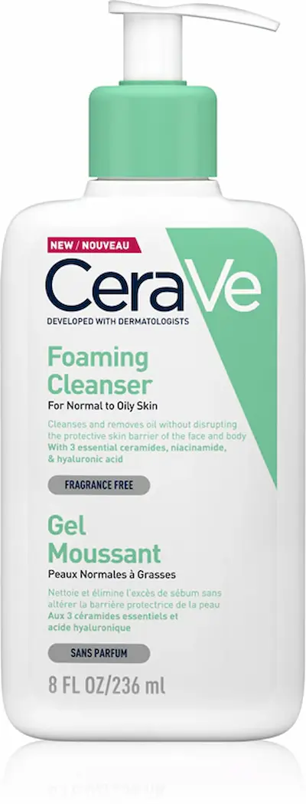
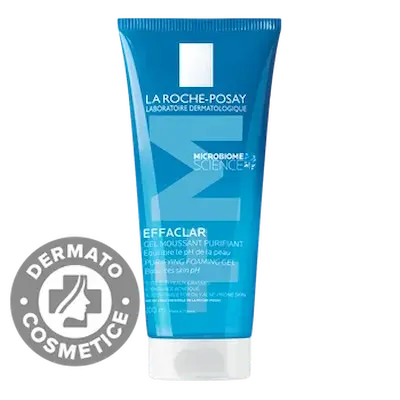
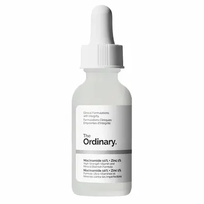
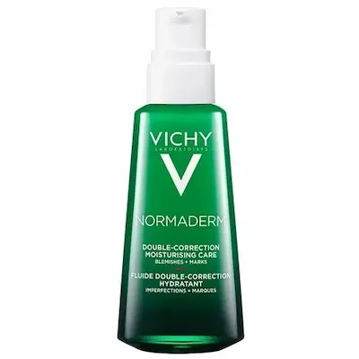
Întrebări frecvente despre excesul de sebum
Ce este sebumul și de ce este important?
Sebumul este uleiul natural produs de piele, care o protejează, menține hidratarea și formează o barieră împotriva factorilor externi. Însă, în exces, poate duce la luciu, pori dilatați și apariția acneei.
De ce pielea produce prea mult sebum?
Cauzele principale includ predispoziția genetică, dezechilibrele hormonale, stresul, îngrijirea incorectă, produsele agresive și o alimentație bogată în zahăr și grăsimi.
Cum pot controla excesul de sebum?
Folosește geluri de curățare blânde, creme matifiante și tonere fără alcool. Curățarea regulată, hidratarea și utilizarea ingredientelor seboregulatoare, precum niacinamida sau acidul salicilic, ajută la echilibrarea pielii.
Ce ingrediente sunt eficiente pentru tenul gras?
Niacinamida, acidul salicilic, uleiul de arbore de ceai, zincul și argila sunt printre cele mai eficiente. Acestea reduc inflamația, controlează luciul și ajută la curățarea porilor fără a usca pielea.
Ce ar trebui evitat?
Evită scruburile agresive, produsele cu alcool și spălarea excesivă a feței. Acestea pot stimula producția de sebum. De asemenea, evită cremele foarte grele care pot bloca porii.
Când este necesar un consult dermatologic?
Dacă apar inflamații severe, acnee persistentă sau dacă pielea nu răspunde la îngrijirea obișnuită, este recomandat să consulți un dermatolog pentru tratament personalizat.
Influențează clima din România producția de sebum?
Da. Vara, temperaturile ridicate pot intensifica luciul pielii, în timp ce iarna, aerul uscat poate duce la deshidratare și la o producție compensatorie de sebum. Adaptarea rutinei în funcție de sezon este esențială.